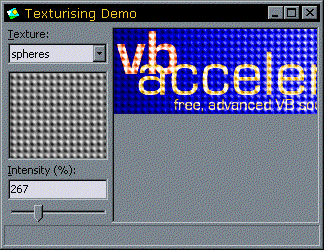

VB5 Texturising Demonstration (164K)
VB5 Texturising Demonstration (164K)
 VB6 Texturising Demonstration (161K)
VB6 Texturising Demonstration (161K)
 13 Jan 2003
13 Jan 2003
Added VB6 Download
 Subclassing Without The Crashes
Subclassing Without The Crashes

Texturising Images
Combine an image with a tiled texture for neat graphic effects.
This sample provides a simple image processing application which applies a texture to an image by modifying the lightness of the image according to the lightness of a texture image. The texture image is tiled across the surface of the processed image.
Applying Textures
To modify an image so it looks as if it has been textured, basically we want to change the lightness of the image according to a texture value. In order to determine the lightness of a colour, the Hue, Luminance and Saturation colour model is used.
The simplest approach is to just find out what the Luminance of the texture is at the point in the texture you're trying to apply and then apply that to the image you're processing. However, you can make a more flexible model by allowing the user to specify the amount of the Luminance to apply (i.e. the intensity of the texture you're applying) and also allowing the user to modify the Saturation of the image in accordance with the texture.
This logic is implemented in the cTexturise class in the download. It uses three DIBSections to create the image:
- The Image to process (cDibSrc)
- The Texture to apply (m_cTexture, stored internally)
- A DibSection to place the result into (cDibDst)
The texturising code is then as follows:
Private Sub pApplyTexture( _
ByRef cDibSrc As cDIBSection, _
ByRef cDibDst As cDIBSection, _
Optional ByVal lIntensity As Long = 100, _
Optional ByVal lMidValue As Long = 0, _
Optional ByVal lSaturation As Long = 100 _
)
Dim bDibSrc() As Byte
Dim tSASrc As SAFEARRAY2D
Dim bDibDst() As Byte
Dim tSADst As SAFEARRAY2D
Dim bDibTex() As Byte
Dim tSATex As SAFEARRAY2D
Dim x As Long, y As Long
Dim cx As Long, cy As Long
Dim tx As Long, ty As Long
Dim tcx As Long, tcy As Long
Dim lS As Long, fLightness As Single, fIntensity As Single
Dim fSaturation As Single
Dim fMidh As Single, fMids As Single, fMidl As Single
Dim fAmount As Single
Dim h As Single, s As Single, l As Single
Dim r As Long, g As Long, b As Long
' Evaluate the H, L and S for the mid value:
fIntensity = lIntensity / 100#
RGBToHSL lMidValue, lMidValue, lMidValue, fMidh, fMids, fMidl
fSaturation = lSaturation / 100#
' Get all the bits to work on:
With tSASrc
.cbElements = 1
.cDims = 2
.Bounds(0).lLbound = 0
.Bounds(0).cElements = cDibSrc.Height
.Bounds(1).lLbound = 0
.Bounds(1).cElements = cDibSrc.BytesPerScanLine
.pvData = cDibSrc.DIBSectionBitsPtr
End With
CopyMemory ByVal VarPtrArray(bDibSrc()), VarPtr(tSASrc), 4
With tSADst
.cbElements = 1
.cDims = 2
.Bounds(0).lLbound = 0
.Bounds(0).cElements = cDibDst.Height
.Bounds(1).lLbound = 0
.Bounds(1).cElements = cDibDst.BytesPerScanLine
.pvData = cDibDst.DIBSectionBitsPtr
End With
CopyMemory ByVal VarPtrArray(bDibDst()), VarPtr(tSADst), 4
With tSATex
.cbElements = 1
.cDims = 2
.Bounds(0).lLbound = 0
.Bounds(0).cElements = m_cTexture.Height
.Bounds(1).lLbound = 0
.Bounds(1).cElements = m_cTexture.BytesPerScanLine
.pvData = m_cTexture.DIBSectionBitsPtr
End With
CopyMemory ByVal VarPtrArray(bDibTex()), VarPtr(tSATex), 4
' Get position information:
tx = 0: ty = 0
tcx = (m_cTexture.Width - 1) * 3
tcy = m_cTexture.Height - 1
cx = (cDibDst.Width - 1) * 3
If (cx > (cDibSrc.Width - 1) * 3) Then cx = (cDibSrc.Width - 1) * 3
cy = cDibDst.Height - 1
If (cy > cDibSrc.Height - 1) Then cy = cDibSrc.Height - 1
' Process the image:
For y = 0 To cy
For x = 0 To cx Step 3
' Set the destination to src with brightness adjusted
' to the texture:
lS = bDibTex(tx, ty)
RGBToHSL lS, lS, lS, h, s, fLightness
fAmount = fLightness - fMidl
r = bDibSrc(x + 2, y)
g = bDibSrc(x + 1, y)
b = bDibSrc(x, y)
RGBToHSL r, g, b, h, s, l
l = l * (1 + fAmount * fIntensity)
If (l > 1) Then l = 1
If (l < 0) Then l = 0
s = s * fSaturation
If (s > 1) Then s = 1
If (s < 0) Then s = 0
HLSToRGB h, s, l, r, g, b
bDibDst(x + 2, y) = r
bDibDst(x + 1, y) = g
bDibDst(x, y) = b
tx = tx + 3
If (tx > tcx) Then tx = 0 ' wrap-around texture
Next x
RaiseEvent Progress(y, cy)
ty = ty + 1: tx = 0
If (ty > tcy) Then ty = 0 ' wrap-around texture
Next y
' Clear up:
CopyMemory ByVal VarPtrArray(bDibSrc), 0&, 4
CopyMemory ByVal VarPtrArray(bDibDst), 0&, 4
CopyMemory ByVal VarPtrArray(bDibTex), 0&, 4
End Sub